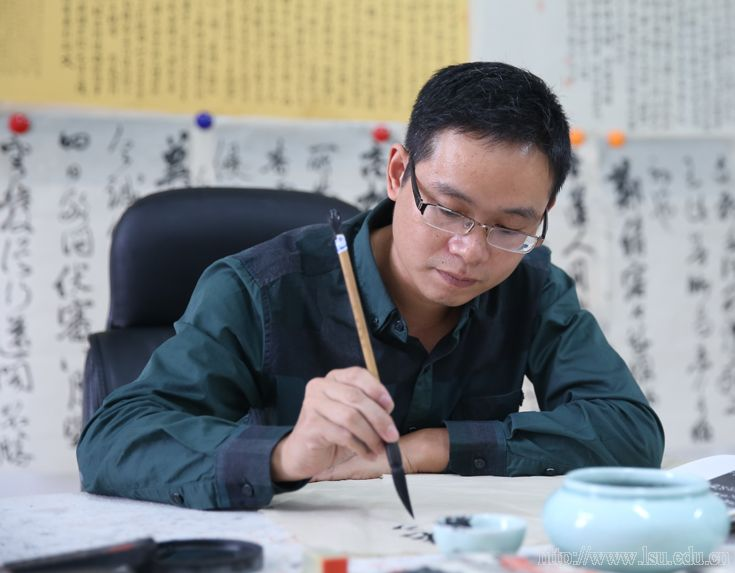

书
我出书了，《Web全栈工程师的自我修养》
Posted on August 24, 2015.经过大半年的写作和准备，我的第一本书，《Web全栈工程师的自我修养》已经正式出版，各大网店有售。如果卖得好，希望也可以在实体店看到。
经过大半年的写作和准备，我的第一本书，《Web全栈工程师的自我修养》已经正式出版，各大网店有售。如果卖得好，希望也可以在实体店看到。
2010年，刚进入腾讯公司时候，似乎每天都能学到新东西，打个很俗的比方，就是跟干燥的海绵一样，吸收每一滴自己能接触到的水分。比如这篇文章腾讯三年，从中还是能看出当时的自己有满满的激情，以及，满满的优越感。从自己消费的内容（知乎，kindle）和产品（MacBook）中，能看出很骄傲的心态。简单地说，就是年轻爱装逼。

【人物名片】王泽玖：副教授，南京大学书法硕士，中国书法家协会会员，浙江省书协创作委员、学术委员，浙江省青年书协理事兼学术委员会副秘书长，丽水市书协副主席，龙渊印社副社长，丽水开明画院副院长，丽水市高级人才联合会文化艺术专家委会会副秘书长。作品入选浙江省文化厅青年书法家提名展、首届全国行书展、首届全国草书展、首届林散之书法奖、第二届全国册页展、第二届赵孟頫奖全国书法展、第三届中国书坛兰亭书法双年展等，先后获第四届全浙展银奖、浙江省小作品展金奖、浙江省第四届职工书法大赛金奖及浙江省群星奖金奖等。学术论文发表于《南京艺术学院学报》、《广西艺术学院学报》、《艺术百家》、《艺术教育》等专业核心刊物，著有《处州十大历史人物——何澹》、《渥川历史文化寻踪与研究》、《浙江省新峰计划培养人才·王泽玖卷》，主持教育部人文社会科学研究规划基金项目《丞相世家：何澹及其家族研究——基于17方出土墓志之考证》。2008年获丽水市政府首届"绿谷文化奖"，2010年获丽水市宣传文化系统首批"四个一批"人才，2013年入选浙江省书协首批"新峰计划"培养人才;2014年获丽水市高级人才联合会"优秀专家"；2015年获丽水学院"优秀学术骨干"。
欣赏王泽玖老师的书法，跟王老师交谈，你会相信"字如其人"这句话真的是对的。"立意高古，格调清逸，多书卷之气"，这是对其书法最多的评价。
王泽玖老师虽年轻，但已桃李满门。在其孜孜不倦的教学中，带动了一大批学生加入到书法艺术学习与创作队伍中，并且获得了不俗的成绩。学生书法作品在浙江省最权威的"全浙书法大展"、"全浙中青年书法大展"中屡屡入展，在校生中有5人加入浙江省书法家协会。在省第四届大学生艺术节的书法比赛，我校获得一等奖的两位同学都是王老师任教的教师教育学院学生。
在谈到大学生书法学习时，王泽玖老师说有三个方面与之密切相关。首先，需要自身对书法有较好的领悟能力。古人云："心悟手从，言忘意得"。对书法造型及线条有敏感性的人，更能觉察到书法用笔的机巧和审美规律。其次，是勤奋。书法是以技法为支撑的艺术，只有通过大量的学习锤炼，才能打下扎实的技法基础。学习书法不但要勤奋练习，还应多看书，多思考。书籍是文人精神的巢穴，艺术生命的禅室。看书可以提高自己的文化与艺术修养，还可提升自己对书法艺术美的感悟力、分辨力以及创造力。再次，是需要专业老师的指导。书法的技法丰富，门道很多，如果没有专业老师的指导，很难领会其中的精髓。只有经过专业教师的指导和培养，才能在书法上少走弯路。
尊重学生，赏识学生，王泽玖老师一直在书法教师的岗位上用心耕耘。王老师的办公室里放满了书法作品。书法长卷如墙纸般装饰着墙面，地上也摊满幅式各样的作品，只留一条供人通过的小道。在采访过程中，王老师常会小心地抽出其中的作品为我们讲解。原以为那些精致的作品都是王老师大作，询问后才得知，原来许多还是出自学生之手。
对于书法创作，王老师认为，创作一幅优秀书法作品，离不开作者娴熟的书法技巧，以及其对生活的态度与哲学思考。为求得书法自然，创作者要有意识地培养法之传承、势之营造、意之抒发和境之浑然四种能力。
法之传承，在于经典名帖的临摹。书法创作，首要是临摹。临帖时需要具备两点意识：一是精准意识。学书法打基础阶段，临摹对象要选择经典、高格调的作品，树立丝丝入扣的模仿理念；二是个性意识。对于具备一定临帖能力的作者，不能一成不变地模仿，在熟练掌握了一两家笔法之后，要选择与自己内心情感相契合的法帖，有选择、有侧重、有目的地临写，并自然融入个体情感与审美理念，同时有意识地加以挖掘与保持。
势之营造，在于空间布白的驾驭。"势"从审美上大致可分为"平和之势"与"奇崛之势"。"平和之势"的书作追求典雅端庄之韵味，布白显得匀称有序，错落有致，其所表现的审美意境是"不激不励，风规自远"。"奇崛之势"的书作追求跌宕起伏之气势，布白显得大开大合，对比强烈，其审美意境有如清代邓石如所说："疏处可以走马，密处不使透风，常计白以当黑，奇趣乃出。"
意之抒发，在于性情意趣的抒写。清刘熙载《书概》说："写字者，写志也"，"笔性墨情，皆以其人之性情为本。"书法写的是人生，是性情，是心境，书作中的神采、气韵、筋骨、血脉，便是书者人格力量、审美情感的外化。书法艺术是"法"与"意"的结合，是形与神的合一。笔法、字法、墨法等都是手段，神采才是目的。可以说，法意兼备，方为上品。 境之浑然，在于化有意为无意。学习书法，临帖由生硬做作到流畅自然，创作亦然。创作一幅作品从局部的点画到整体的行气、章法安排，可分为刻意、有意、无意三个阶段。初学作书"有意为之"，继以时日"遂欲乱真"，再到心无挂碍"无意于佳"，每一阶段的提升都需要苦练技法，深习文化，精益求精。
思索当下书坛，书法展览机制的普及化与书写者情绪的浮躁化，使得书法渐渐淡化了传统文化之底蕴，弱化了情感之因素，在追求外在形式与点画观感的同时，使得书写中的"刻意"、"蓄意"多于"无意"、"随意"。为此，在当下社会环境中，书者更应潜沉心境，传承传统，锤炼功夫，熟练技巧，并厚之以文化，辅之以情感，最终"随意落笔，皆得自然"，不期然而然，达到艺术之高点。
闲暇时刻，王泽玖老师常会出去旅行，但这旅行的目标却也不离书法。聚集了中国古代精美碑石艺术的西安碑林，荟萃了摩崖石刻和碑刻作品的山东泰山……王老师讲到："实地去看看古人留下的精美书法精粹，对学书法的人来说益处颇多，不仅可以开阔视野，还能启迪创作。" "潜沉心境，继承传统，锤炼功夫，熟练技巧，并厚之以文化，辅之以情感，最终'随意落笔，皆得自然'，不期然而然，达到艺术之高点。"这是王老师最真诚的艺术心得。
王泽玖老师寄语：作为大学生，应该对自己的人生有一个定位和规划，并在大学四年中朝着这个方向去努力。一个有准备的人，加上自己的勤奋和努力定能完成自己的目标，实现自己的人生价值！